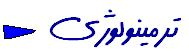

�
�ֶַָ Absent
(��ו) ֿׁד�ַהی ׀یב ָ˜ַׁדל ׁזֿ: ַב�- �ֶַָ ַּׂב׃ו ַֿֿׁ׃ی. ֿׁודیה ד�הל ַ׃� ˜ו דی��זیהֿ: ַב�ֶַָ �בל ּֽ�ו. (דַֿו ۱۶۴ ֲֶیה ַֿֿׁ׃ی דֿהی) זױ�ֽו ۷۲۱- ۷۴۳ ַּד� ַבװ�ַ�.
ָ- ˜׃ی˜ו ַׂדֽב ׃˜זה� ־זֿ דֿ� ה׃ָ�ֳ דֿیֿל ֿזׁ װֿו ז ־ָׁל ַׂ ַז ַָׁל ַֽֿی ַׂ˜׃ַה ז ֲװהַیַה זל הדל ׁ׃ֿ
ז ַیה הז� �یָ� ַׁ ַױ״בֳַֽ ((�یָ� דה�״�ו)) �זیהֿ (ַּד� ַבװ�ַ�- ױ�ֽו ۶۶۹). ַیה �ֶַָ ַׁ ֿׁ ��ו ((�ֶַָ ד��זֿ ַב־ָׁ)) הַדהֿ. (דֿהی) ֿׁ�ַהזה דֿהی וׁ˜׃ ˜ו ַׂ�یָ� ַז דֿ� ַָבה׃ָֹ דֿیֿ �׀װ�ו ז ַׂ ַז ָוی� זּו ־ָׁל הַָװֿ �ֶַָ ד��זַֿבַֻׁ הַדیֿו דی�װזֿ (דַֿו ۱۰۱۱ �- ד) (ׁ˜. �یָ�)
�ֶַָ ד��זַֿבַֻׁ
ׁ˜. �ֶַָ
�ֶַָ ד��זֿ ַב־ָׁ
ׁ˜. �ֶַָ
(ַַֿׁו ַדזַב) �ֶַָ
ד�ױזֿ �ֶַָ ד��זֿ ַב־ַָׁ׃� ˜ו ֿׁ�یַָ ַז �ַהזה ַװ־ַױ ד�یהی ַׁ (ַ�ד ַַׂװ־ַױ ׁ׃דی یַ �یׁׁ׃דל) �ֽ� װֶַׁ״ ז ַזײַ� ז ַֽזַב ־ַױל ד˜ב� یַ ד־�ַׁ ֿׁ ה�וַֿׁל ז ֽ�ַ�� ַדזַב ָה�� �ֶַָ ˜ֿׁו ַ׃� (ַֿהװהַדו ֽ�ז�ל- ּבֿ ַזב ױ�ֽו ۷۰). ֿׁ ��ו ַַֿׁו ַדזַב �ֶַָ ָֿׁی�ַׁה זַָּ ˜�ֶַל ז �˜בی� ַּ�דַ�ל ַ׃� ז הדזהו ַל ַ׃� ַׂ ��ַזה ַּ�דַ�ל (װֽׁ בד�ו- ּבֿ ַזב- ױ ۴۴۱- ۴۴۴).
�ַָה
(דֿהל- ��ו) ˜׃ی˜ו ֿׁ ד�ַדבו דזָּ ד�ָזה װֿה ״ׁ� ֿی�ׁ �ֿׁیֿו ַ׃� (דַֿו ۴۱۶ � - ד).
�ַׁ
ׁ˜. ײדַה �ׁזׁ
�ַׁ� Pillage
(ַּׂ) �ױַָֽ דַב דה�זב �یׁ ָ�ז׃״ �ֿו ַל ַָ ַ�דַב �וׁז�בָו. �הַױׁ ֲה �ַָׁ� ַ׃� ַׂ: ַב�- �דֿ
ָ- �דב ּד�ל �ֿו ַל ַַׂ�ַֿׁ ד�ֽֿ یַ �ײז ַָהֿ ָֿזה ַیה˜ו ی˜ ׃ַׂדַה ֶַֿד یַ �ָבל ַָׁל ַیה �ּד� בַׂד ַָװֿ.
ּ- ַ�דַב �וׁז�בָו �דזדל ˜ו דד˜ה ַ׃� װַדב ֽדב ׃בַֽ הیַָׂװֿ זבל ד׃בֽ ָזֿה דּהל �בیוד זیַ �ז׃ב ֲהַה ָ�זו �וׁیו װׁ״ הی׃�.
ֿ- דַב דה�זב ז ַ׃הַֿ ז ַזַׁ�. (ׁ˜. �״ַ� ַב״ׁی�)
�ַׁ׃ל
ׁ˜. ד�ַׁ׃ו
�ַׁז�ו
(��ו - דֿהی) ׂדیה וַל ˜װַזׁׂל ֿׁדױׁ ˜ו דב˜ ֿזב� ָזֿו זַ�ַֿׁ ַָ׀ה ֽ˜זד� ֽ� ָוׁו ַָֿׁׁל ֲַׂה�וַ ַׁ ַֿװ�ו ז ׂהַה ַׂ ֲה�וַ ַֻׁ הדל ָֿׁהֿ זַָ׀ה ֽ˜זד� �ַָב ז�� ˜ֿׁה ָזֿו ַ׃�. ָדזָּ ��ֿל ˜ו ַ׃ד ֲה �ַׁז�ו ַ׃� דַ׀זה דה��� ַׂ ׂדیה ד׀˜זֲׁהַׁ ֿׁ ֱַַׂ ֿیה ־זֿ הֿׂ ֶַֿה דל �׀ַװ� �ַ ֶַֿה ַׂ דהַ�� ֲה ׂדیה ַָׁל ָֽׁ ״בָ ־זֿ ָוׁו ַָֿֿׁׁ זבל ַױב ֿیה ד׃�וב˜ הװזֿ זַָ�ל ָדַהֿ זוׁ ז�� ˜ו דֿیזה ַױב ֿیה ַׁ דی�ַֿֿ ׂדیה ַׁ �׃ דی��ׁ�� זֽֿׁ�ی�� הז�ל ַׁׂוה �ױׁ� ָזֿו ַ׃�.
�ַی� Motif
ָד�הל �ׁײ ַ׃� (ׁ˜. �ׁײ) ַ׃ַָָ דזּו ֽ˜ד ַׁ ˜ו ַֿזׁ یַ ַֿֿׁ׃ ֿׁד�ֿדו ֽ˜זֳׁی דל ֲזֿׁ motif דל הַדהֿ.
�ָ״ו
(��ו) דה�זׁ ַׂ�ָ״ו ֿׁה�וַֿׁל ַדזַב דזבל �בیו ַیה ַ׃� ˜ו זבל �דבל ה˜הֿ ˜ו דזָּ �׃ַֿ דַב דזבל �בیו װזֿ ַדַ ׁ׃ַהֿה ה�� ָדזבל �בیו ֿׁ�ױׁ�ַ�ی ˜ו זבל דל ˜הֿ ײׁזׁ� הַֿֿׁ (ַּד� ַבװ�ַ�- ױ�ֽו ۲۱۲). ֿׁ�ַהזה דַ ��״ ֿׁדזֿׁ זּזו �یד ד˜ב� ָ�ֽױیב ׃זֿ ַָׁל דזבל �בیו װֿו (דַֿו ۹۰ �ַהזה ַדזֽׁ׃ָל) זֿׁדַֿו ۷۹ ודַה�ַהזה ���ו װֿו ַָیֿ ׁ�ַی� דױבֽ� ַׁ ָ˜הֿ זבל ׁ�ַی� דױבֽ� �یׁ ַׂ�ֽױیב ה�� ַ׃��ו ַ�ב דױבֽ��� ודַה ַ׃� ˜ו �ױׁ�ל ֿׁדַב דּֽזׁ ה˜הֿ ˜ו דזָּ �׃ַֿ �ֿֿׁ. (דַֿו ۱۲۴۱ �ַהזה דֿהی).
�ָה Lesion
(דֿהی- ��ו) �הַױׁ ׃ַׂהֿו �ָה �ַָׁ� ַ׃� ַׂ: ַב�- זּזֿ ��ֿ ד�זײ �یׁדַַָֽ�ی.
ָ- ��ییה �یד� ֶַֿׂ ַָׁׁׂװ ַ��ױַֿל דַב ַׂ״ׁ� דה��ב �הו.
ּ- ��ییה �یד� ֶַֿׂ ד׀˜זׁ �ז� הַװל ַׂ זּזֿ �یָ ֿׁדזֿׁ ד�ַדבו הַָװֿ זַבַדזֿׁ דָׁז״ ָ־یַׁ �یָ ַ׃�.
ֿ- �ییה �یד� ֶַֿׂ ד׀˜זׁ �ז� הַװל ַׂ �ֿבی׃ הַָװֿ זַבַ דזֿׁ דָׁז״ ָ־یַׁ �ֿבی׃ ַ׃�.
ו� - ּוב דה��ב ַבیו ַָׁׂװ ַ��ױַֿל דַבל ˜ו ַׂ ד�ַדבו �ֽױیב ˜ֿׁו ַ׃�.
ז- ּוב דָׂזׁ ּוב דׁ˜ָ ַָװֿ זַבַ ַ�ׁ ַָֿהֿ ˜ו �یד� דַב ַׁ הדی�ַֿהֿ זַָ ַیה זױ� זַֿׁ ד�ַדבו װזֿ ֽ� ־یַׁ�ָה הַֿֿׁ זד�ָזה דֽ׃זָ הדی�װזֿ. ד�ײׁׁ ַׂ�ָה ַׁ ד�ָזה זדה��� ַׂ ֲה ַׁ �ַָה הַדהֿ. ־یַׁ�ָה ַ־�ױַױ ָ��ֿ ָی� הַֿֿׁ (דַ ֿו ۴۱۶ �- ד).
�ָה ַ�ֽװ
(��ו - דֿהی) ַױ״בַֽ ד�ַֿזב הזی׃הֿ�ַה ַ׃הַֿ ַ׃� זד�ױזֿ �ָה ־یבی ׂیַֿ ַ׃� ַׂ ה�ׁ �ַהזה דֿ�ی �ָה �ַֽװ װַדב ודו דַׁ�ָ �ָה דל װזֿ.
�ָה �ַֽװ
(דֿהی) �ָהی ˜ו ָד�ַֿׁ ־ד׃ �یד� یַ ییװ�ַָׁװֿ یַ ַ�ׁ˜ד�ׁ ַׂ־ד׃ ַ׃� �ׁ�ַ �ַָב ד׃ַדֽו ז�׀װ� הַָװֿ (דַֿו ۴۱۷ � - ד).
(־یַׁ) �ָה
ׁ˜. ־یַׁ
�ֿׁ
(��ו) �ַּזׂ ָֿװדה �׃ ַׂ ַֿֿה ַדַה �ַהזהی (ׁ˜. �ַדیה).
�ַׁד� Amende
ֿׁב�� ָד�הל ־׃ַׁה זׂیַה ז־׃ַׁ� ז דװ�� זַֿֿה דַב ַׁׂזל ˜ַׁו� ַ׃�. ַֿׁױ״בַֽ ָד�הל ּׁیדו ה�ֿל זֲה�ו ˜ו ַָָ� ַָּׁה ־׃ַׁ� ַֿֿו װזֿ (ַ�ד ַׂ ה�ֿی ז�یׁ ה�ֿל) ָ˜ַׁ דی�ׁזֿ. ַֿׁױ״בַַֽ� �בד ַּׂל ּֿیֿ (ֿׁ ַָׂה �ַׁ׃ی) �ַׁד� וׁ�ַו ָ״זׁ ד״ב� ַ׃��דַב װזֿ ָד�הל ַּׂל ה�ֿی ַ׃� (דַֿו ۱۳۴ ֲֶیה ַֿֿׁ׃ל ˜ی�ׁל) ַױ״בַֽ בַ�یה ָד�הל זּו ה�ֿל ַ׃� ˜ו ָ�הזַה ײדַה� ֱַַּׁ Sanction ָ˜׃ל �ֽדیב דی�װזֿ.
�ַׁד� ּה�ی Contribution de guerre
(ָیה ַבדבב �דזדל) דָב�ל זּו ה�ֿ ˜ו ֿװדה �ַֿׁ־� ֲהַׁ ַׂ׃˜הו ־ַ˜ �ױׁ� ˜ֿׁו یַ ַװ�ַב˜ֿׁו ־זֿ ד״ַבָו דל ˜הֿ (דַֿו ۴۹- ۵۱ ײדیדו �ַַֿֿׁׁ בַוו- ַ˜�ָׁ ۱۹۰۷)
�ַׁד� ׁ׃یֿ�ל Amende de Proocedure
(ַֿֿׁ׃ל דֿהל- ˜ی�ׁל- ַָׁׂ�ַהی) �ַׁד�ל ˜ו ָדה�זֽׁ׃ה ּׁیַה ַֿֿׁ׃ی ד�ׁׁ װזֿ ־זַו ָדה�זׁ ׁ�ַی� �װׁی�ַ� ַֿֿׁ׃ל ַָװֿ (דַההֿ דזֿׁ דַֿו ۱۸۳ ַֿֿׁ׃ל דֿהی) ז־זַו ַָׁی ּבז�یׁל ַׂ ׃זֱ ַ׃��ַֿו ַׂד�ַׁׁ� ׁ׃یֿ�ל (דַההֿ דזֿׁ דַֿו ۴۰۵ ַֿֿׁ׃ל דֿהی).
�ַׁד� ײדַה
(��ו) �ַׁד�ל ˜ו ײַדה ָדהַ׃ָ� ��ֿ ײדַה דד˜ה ַ׃� ד�ֽדב װזֿ.
�ַׁד� �ײֶַל Astreinte
(ַֿֿׁ׃ی דֿהی) ֽ˜ד ַַֿׁל ַֿֿ�ַו ָׁ דֿیזה ˜ו ָה׃ָ� וׁ זַֽֿ ד�یה ַׂ ׂדַה ˜ו ֱַַּֿׁׁ ��וֿ ־זֿ �ַ־یׁ˜הֿ דָב�ל ָו ד��וֿבו ָֿוֿ (דַֿו ۷۳۰ ַֿֿׁ׃ל דֿהی). (ׁ˜. �ֶזׁל ַַָּׁ)
�ַׁד� ˜�ַב�
(��ו) �ַׁד�ל ˜ו ˜�یב ָדהַ׃ָ� ��וֿ ־זֿ ֿׁ��ֿ ˜�ַב� דד˜ה ַ׃� �ֽדב ˜הֿ.
�ַׁד� ˜ی�ׁלAmende penale
�ַׁד�ל ַ׃� דַבל ָױזׁ� זּו ה�ֿ ˜ו דֽ˜זד ּֿׁהַی� (ָױזׁ� דַַּׂ� �˜דیבל) یַ ּהֽו (ָױזׁ� דַַּׂ� ַױבל זیַ �˜דیבל) یַ ־בַ� (ָױזׁ� דַַּׂ� ַױבל) ַָیֿ ָ־ַׂהו ֿזב� ָ�ַֿֿׁׂ ז ַׂ ��וַֿ� ַז דֽ׃זָ ַ׃�. (ׁ˜. ˜ی�ׁ ַױבל- ˜ی�ׁ �˜דیבל)
�ַׁד� דַבל Amende fiscale
(דַבیו) �ַׁד�ל ˜ו ָדהַ׃ָ� ֶַּׁד דַבל (��ױیַׁ� דָׁז״ ָו �זַהیה דַבیַ�) ד�ׁׁ דی�װזֿ זדַוی� ֲה ֿׁ�یה ַֽב ״�ד �ַׁד� דֿהל ז˜ی�ׁی ַֿֿׁ ی�הל ַָ�ׁ��ה ַیה �ַׁד� ַׂ ד�ַּזׂ¡ ֿזוֿ� �ַדیה דی�װזֿ ی˜ל זױזב ֽ� ֿזב� זֿی�ׁל ױیַה� דױַבֽ דָׁז״ ָ�זַהیה דַבیַ�ی זׁ�� �ַּזׂ ד�ַּזׂ.
�ַׁד� דֿהל Amende civile
�ַׁד�ל ˜ו ַָ׃�הַֿ �ַהזה דֿהی (זֲה�ו ֿׁ ֽ˜ד �ַהזה דֿהی ַ׃� דַההֿ �ַהזה ָֻ�) זָֽ˜ד ַֿֿ�ַו דֿהל ��ییה דی�װזֿ ז�ַָ� ד�ַׁׁ� ˜ی�ׁל (ַׂ�ָیב ˜ی�یַ� ד־��ו ז דװֿֿו) הדی�ַָװֿ.
�ׁׁ (ָ��ֽ ַזב זֿזד) Alea
(��ו - דֿהی) �הַױׁ�ׁׁ�ַָׁ� ַ׃� ַׂ: ַב�- ּוב
ָ- ַֽ�דַב ֽױזב ײַׁׁׂהַֽیו ּוב. ָהַַָׁیה ַ�ׁ˜׃ל ַ�ַֿד ָ��ֿל הדַیֿ ז ּוב ָی˜ל ַּׂוַ� ד�ַדבו ַֿװ�ו ַָװֿ ז ַׂהַֽیו ֲה ּוב ַָׁל ַז ַֽ�דַב ֽױזב ײׁׁל ָֿׁیה ַָװֿ ֲה ��ֿ ַׁ ��ֿ �ׁׁל �זیהֿ ז ַָ״ב ַ׃� (הול ַבהָל ױ �ה ָی� ַב�ׁׁ) זבל ַ�ׁ ַֽ�דַב ײׁׁדה��ל ַָװֿ ױׁ� ֲה ּוב¡ ױֿדו ַל ָ��ֿ הדی�ׂהֿ ָהַַָׁیה ַ�ׁ ֿז׃ַ�� ˜ו ַׂוּׁו� ַַֿׁל דװ־ױַ� זַֽֿ ַָװהֿ זדַב˜ ֲה�וַ ی˜ל ַׂ ֲה ֿז ַׁ ָֿזה ��ییה ָ�ׁזװֿ ַָ זּזֿ ַیה˜ו װ־ױ דָی� דּוזב ַ׃� �זה ַֽ�דַב ײׁׁדה��ל ַ׃� ד�ַדבו �ׁׁל הی׃�. (דַֿו ۱۹۰ � - ד)
(ָی�) �ׁׁ
(��ו) ָی�ל ˜ו ֲֿׁה �ׁׁ זּזֿ ַֿֿׁ.
(��ֿ) �ׁׁ
ׁ˜. �ׁׁ.
�ׁײ Motif
(��ו) ֿׁ��ַוד �ׁ�¡ �˜ׁל ַ׃� ˜ו �یװ ַַׂ�ַֿד ָ˜ַׁל ֿׁ־ַ״ׁ ־״זׁ הדַیֿ ז �˜ׁ זױזב ֲָה¡ דֽׁ˜ ַה׃ַה ה׃ָ� ָו ֲה ˜ַׁ�ֿֿׁ �הַה˜ו דیַָׂה ַָׁל �׀یֶַׁל ַׂדו�דַה �׀ַל ד־ױזױל ַׁ דל ־ֿׁ �˜ׁ �׀یֶַׁی ַׂדו�דַה¡ דֽׁ˜ ַָׁ�ַֿד ָו �דב ָی� ָזֿו ַ׃�. וׁ�ַו �ׁײ ַֽױב הװזֿ ױֿדו ַל ָ��ֿ הדל ׁ׃ֿ �הַה˜ו ֿׁדַֻב ַָבַ ַ�ׁדו�דַה ־ב� ז�ֿו ˜הֿ ָی� �ַ׃ֿ הדל �ֿֿׁ ז ַָׁל דװ�ׁל ֽ� ־یַׁ וד ה־זַוֿ ָזֿ. ַֿ�ל ַׁוד ��וֱַ ֿׁודیה ד�הל ָ˜ַָֿׁׁו�ַהֿ.
�ׁײ ָד�הל ַ�ד
(��ו) וׁ�ו ˜ו ֿׁ �ױֿ �ַ�ֿ (یַ ַی�ַ� ˜ההֿו) ֲֿׁیֿ זבל ד˜װז� ָ˜ַװ� �ױֿ ה�ֿֿׁ �הזַה �ׁײ ָד�הל �ַד ַׁ ַֿֿׁ �׃ ַ�ׁװד�ַֿה ד�یהל ַׁ ָ־ֿׁ ז�דַה ˜הֿ ˜ו ״בַ ַ׃� ז�׃ ַׂ��ֿ ֲװ˜ַׁװזֿ ˜ו ד״בַ ַ׃� ��ֿ ױֽیֽ ַ׃� זֽ� ־یַׁוד הַֿֿׁ ׂیַׁ ַ�ַׁײ זֿזַ�ל �ַֻیׁל ֿׁ��ֿ (ַׂה�ׁ ױֽ� זָ״בַה) הַֿׁהֿ. ַیה ד�הל ַ�ד ַׂ �ׁײ ָד�הی ד��ַׁ� ֲה ַ׃� ˜ו ׀یב ˜בדו ((�ׁײ)) ָیַה װֿ.
�ׁײ ּׁד
(ַּׂ) וֿ�ל ˜ו דּׁד ֲהַׁ ָו �ױזׁ ז �ױֿی� ֿׁ ֲזֿׁו ׃�׃ ַָׁל זױזב ֲָה ֿ׃� ַָׁ�˜ַָ ּׁד דל ׂהֿ. ד�וזד ˜בל �ׁײ (ׁ˜. �ׁײ) ַֿׁیה דזֿׁ הیׂ ױֿ� דی�˜הֿ ד�וזד �ׁײ ַֿׁדזׁ˜ی�ׁל ד׃��ב זד�ַیׁ ַָ ד�וזד ֲה ֿׁ ַדזׁ דֿ�ی یַ ׃ַیׁ ַדזׁ ׂהֿ�ל הی׃�¡ ֿׁ ַױ״בַַֽ� ּֿیֿ ַָּל ַیה ַױ״בַֽ ַה�یׂו ּׁד ַ׃��דַב דל װזֿ.
�ׁד (ָײד ַזב ז׃˜זה ַֻהל)
(��ו) �ַׁד� ז ־׃ַׁ� ַׁ �זیהֿ. ֿׁודیה ד�הی ַ׃� ˜ו ���ו�ַהֿ: דה בו ַב�הד ��בیו ַב�ׁד. ה�ׁیו �ֽדב �ׁד idee de risque ˜ו �ַול ָו ((ה�ׁیו ד׃ֶזבی� דזײז�ל)) ז �ַול ָו ((ה�ׁیו ־״ׁ!)) ��ָیׁ דל װזֿ ی˜ל ַׂדַָהی �הּ�ַהו ד׃ֶזבی� ד�ָז� ַׂ�ַָ� ַ׃� (ׁ˜. ד׃ֶזבی� ד�ָז� ַׂ״ׁ� �ַָ�) ָדזָּ ַیה ה�ׁیו �זה ד�ָז� ֿ׃� ָ˜ַׁל ֿׂו ז ַװ־ַױی ַׁ ֲָׁה �דַֿׁו זַׂ��ַבی� ֲהַה ָוׁו דی�ָֿׁ ַָیֿ ־׃ַׁ� זײׁׁל ַׁ ˜ו ַׂ��ַבی� ֲה�וַ הַװל דל װזֿ �ֽדב ˜הֿ �ַוی ַیה �˜ַָׁ �ַבָ דה בו ַב�הד ��בیו- ַב�ׁד ֱַַֿ דל װזֿ. ַה��ַֿ- ַזבַ- ָהַַָׁیה ה�ַׁ�ׁ ַײַׁׁ �ַָ� �דֿל ַָװֿ ַָׂוד ד�ָז� ד׃ֶזב �דב ַז ַ׃� ׂیַׁ ַׂ ˜ַׁ ַז ָוׁו דל ָֿׁ זַֽב ַیה˜ו ַזד׃ֶזב �דב ־״ֶַی ַ׃�.
ַֻהیֳ- ַָ��ײֱַ ַیה ַ׃�ֿבַב ד�ָז� �׃ ַׂ ַֿֿה ־׃ַׁ� ד�ײֽׁׁ� ַ־׀ ֲהַׁ ַׂ�ַ ָ� הַָیֿ ַֿװ�ו ַָװֿ זַֽב ַیה˜ו �הیה הی׃�.
�ׁדֱַ (ָײד �یה ז��ֽ ֱַׁ) Masse des creanciers
(��ו- דֿהל (ָד�הל ָ׃�ַה˜ַַׁה ַ׃� ז ָیװ�ַָָֿׁׁ ָ׃�ַה˜ַַׁה ד�ב׃ ז זׁװ˜׃�ו ַ׃��דַב דی�װזֿ. (דַֿו ۵۰۶- ۵۱۸- ۵۱۹ �ַהזה �ַּׁ�) ז ַֽیַהֳ ֿׁ־ױזױ ָ׃�ַה˜ַַׁה �ַֿל ז ָֿזה ֽ� ��ֿד ז זֻی�ו ָ˜ַׁדیׁזֿ.
�ׁیָ
(��ו) ֿׁ�בד ַֿׁیו ַױזב ַ־ַָׁ �וַׁ �׃ד ַ׃�: ױֽیֽ- ֽ׃ה- דזֻ�- ײ�ی� וׁی˜ ַַׂیה �וַׁ�׃ד דד˜ה ַ׃� �ׁیָ ַָװֿ ז�ׁیָ ַׁ ׃ו ד�הל ַ׃�: ַב�- �ׁیָ ַֽׂیֻ ׃הֿ זד�ה ז ֲה ־ָׁל ַ׃� ˜ו ד�ה ֲהַׁ ��״ ی˜ ַׁזל ה�ב ˜הֿ.
ָ- �ׁیָ ַֽׂیֻ ׃הֿ זֲה ־ָׁל ַ׃� ˜ו ד�ַֿ ֲהַׁ ּד�ל ַׂ ױַָֽו דל װהַ׃הֿ זבל ی˜ה�ֲׁהַׁ ׁזַی� ˜ֿׁו ַ׃�.
ּ- �ׁیָ ַׂ ֽیֻ ד�ה- ז ֲה ־ָׁל ַ׃� ד�ֿׁ ˜ו ּדַ��ی ַׂ ַזֲה ־ָׁ ַׁ ה�ב ˜ההֿ (ָה�ׁیֿ: ד�ֿׁ) זַیה ַׁ �ׁیָ דװוזׁ וד �זیהֿ דַההֿ ((ֽֿیֻ ַהדַ ַבַ�דַב ַָבהیַ�)) ˜ו ודו ֲהַׁ ַׂ �דׁ ה�ב דی�˜ההֿ. �ַול ַ׃ד װַ׀ׁ ַָׁ �ׁیָ וד ַ״בַ� ˜ֿׁו�ַהֿ זבל �זב דװוזׁ ַیה ַ׃� ˜ו �ׁ� ַֿֿׁ (ַֿׁیו װוیֿ- ױ�ֽו ۴۰-۹۷). הז� ֿی�ׁל ַֽֿׂیֻ �ׁیָ ו׃� ˜ו ֲהַׁ ((�ׁیָ ב��ל)) �זیהֿ ז ֲה ֽֿیֻל ַ׃� ˜ו ד�ײדה ׃־ה ֿװזַׁ ֿזׁ ַׂ �וד (ָ�ב� ַیה˜ו ˜ד ַ׃��דַב דی�װזֿ (ַ׃�) ַֿׁیו װוیֿ - ױ�ֽו ۵۴).
�ׁیד
(��ו) ָד�הל ָ׃�ַה˜ַַׁ׃� זּד� ֲה �ׁדֱַ ַ׃� (ׁ˜. �ׁדֱַ) ָו דֿیזה הیׂ ���ו דל װזֿ זַׂ ַ׃דֱַ ַײַֿֿ ַ׃�.
(ֽױו) �ׁیד Dividende
(�ַּׁ�) ַב�- ֿׁ װׁ˜� ׃וַדל ׃וד װׁی˜ ַׂדהַ�� ˜ו ָ״זׁ �הַזָ ֿׁ ַׂדהו ד�یה ַֿֿו װזֿ.
ָ- ׃וד ָ׃�ַה˜ַׁ זׁװ˜׃�ו ַׂ �ׁזװ ַדזַב זׁװ˜׃�ו یַ ֽױו ַל ˜ו ָׁײַی� דֿیזה ֿׁ וׁ׃ַב ָ�ׁדֱַ ־זֿ דی�ֿוֿ.
�װ
(��ו) ַׂ ֶַּׁד דָׁז״ ָו ��בָ ֿׁ˜׃ָ ַ׃� ־זַו ָױזׁ� ַ־�ֱַ �یָ דַב ַָװֿ ־זַו ָױזׁ� ַ�וַׁױ�� ˜דַבל ˜ו ֿׁדַב דזֿׁ ��ֿ זּזֿ הַֿֿׁ (ַּד� ַבװ�ַ�- ױ ۱۳۵- ۱۴۷) וּׁד �בַזו ָׁ ד׃ֶזבی� ˜ی�ׁל ײַדה �ױׁ� ֿׁדַב ״ׁ� דی�ַָװֿ ַیה ּׁד ַָ ˜בַוַָֿׁׁל (ַֿׁױ״בַַֽ� ˜ی�ׁל ּֿیֿ) �ׁ� ַֿֿׁ.
�ױָ Usurpation
(דֿהל- ��ו) �ױׁ� ֿׁדַב �یׁ ָהֽז �ֿזַה (דַֿו ۳۰۸ � - ד) �הַױׁ �ױָ �ַָׁ� ַ׃� ַׂ: ַב�- �ױׁ� ֿׁ דַב �یׁ־זַו ֲה דַב �یה ַָװֿ یַ דה��� یַ ֽ� ַ־�ױַױ.
ָ- ��ַֿה דּזׂ �ַהזהی �ױׁ�.
ּ- �בד ד�ױׁ� ָו הָזֿה דּזׂ �ַהזהی �ױׁ�. ַ׀ה ֿׁ�ױׁ� ˜ו הַװی ַַׂװ�ַָו ַ׀ה ֿוהֿו ַָװֿ דּזׂ �ַהזהל �ױׁ� דֽ׃זָ הדی�װזֿ ז�ױָ דֽ�� דی�װזֿ. ֿׁ��ו¡ �ױָ ּׁד ַ׃� זד׃ֶזבی� ˜ی�ׁל הیׂ ַֿֿׁ. זבל �ױָ ֽ˜דל (ׁ˜. �ױָ ֽ˜דל) ּׁד דֽ׃זָ הדی�װזֿ. (ַּׂ) ֿׁדַֿו ۲۶۴ ָָ�ֿ �ַהזה ַּׂ ַׂ �ױָ ׂדیה �یׁ זדב˜ �یׁ �ֽ� װֶַׁ״ ־ַױی ָֻֽ װֿו ַ׃�. ֿׁ �ַהזה דז�� ַּׁ� ַָװ־ַױی ˜ו דַב �یׁ ַׁ ַה��ַב ַֿֿו یַ �דב˜ דל ˜ההֿ דױזָ ֿזד ּזַׂל ۱۳۰۲ ַׂ�ױׁ� �ַױַָהו זַה��ַב דַב ד�ױזָ ָֻֽ װֿו ַ׃� וד �הیה ַ׃� �ַהזה דַַּׂ� ַּׁ� ַָ ה��ַב דַב �یׁ דױזָ ۱۳۰۸ ֿׁ �ַהזה דַַּׂ� ַװ־ַױی ˜ו ַָׁל ָֿׁה דַב �یׁ �ַָהی דی�˜ההֿ דױזָ דַֿֿׁ ۱۳۰۷ ַׂی˜הז� ד�ֿדו ַָׁל ַׁ�˜ַָ �ױָ וד ָֻֽ װֿו ַ׃�.
�ױָ ֽ˜דی
(דֿהی- ��ו) �ױׁ� ָֿזה דּזׂ ֿׁדַב �یׁ ַׂ״ׁ� ˜׃ל ˜ו �בד ָ��ַֿה דּזׂ �ַהזהל הַֿֿׁ (׀یב דַֿו ۳۰۸ � - ד).
�ױָ הַד ־ַהזַֿ�ל
ַה�־ַָ הַד ־ַהזַֿ�ی ֿی�ַׁה ַָׁל ־זֿ ָֿזה ַ׀ה ֲהַה (דַֿו ۹۹۸ �ַהזה דֿהی).
��ב�
(ַּׂ- דֿהی) הז�ל �־״ל Faute �یׁ �דֿל ַ׃� ַּׂה׃ �ׁ˜ (הו ��ב) ז�ַָׁ� ַ׃� ַׂ�ׁ˜ ��בל ˜ו ַָیֿ ַהַּד דל װֿ (דַֿו ۶-۲۲ �ַהזה ˜ی�ׁ ָׂו וַל דָׁז״ ַָׁו ֲוה- דױזָ ۱۳۲۰). (ׁ˜. ָی�ַֽ�یַ״ל)
�בַֹ
(��ו) ָײד ַזב- ˜׃ַהی˜ו ַָבזוی� ی˜ל ַַׂדַדַה ��یֿו �یַֿ ˜ההֿ یַ ��یֿו ַָבזוی� ַה׃ַהی ַֿװ�ו ַָװהֿ. �בַֹ ַׂ˜�ַׁהֿ.
�בָו
(��ו) ی˜- זײ�ל ˜ו ַ˜ֻׁ ַ�ַֿׁ ی˜ ױה� یַ ی˜ הז� ַַֿׁ דی�ַָװהֿ דֻבַ �זה �ַבָ ַדیה�וַ ־یַה� ָדַב דזֿׁ זֿی�ו הדی�˜ההֿ �בָו ַָָֿׁ ַדیה¡ ַה��ֱַ ־یַה� ַ׃�. �בָו דָהַی ודו ַדַַׁ� �ַהזהی ַ׃� �הַה˜ו דָהַל דַֿו �הּ �ַהזה �ַּׁ� זדַֿו ۳۵ �ַהזה דֿהی �בָו ַ׃� �ו �ַבָ ד�ַדבַ� ی˜ �ַּׁ �ַּׁ�ی ַ׃�¡ ז�ַבָ �ױׁ�ַ� ַׂ״ׁ� דַב˜یה ַ׃�. ֿׁוׁדַֿו �ַהזהל ˜ו דָהַל ֲה �בָו ַָװֿ ה˜ַ� ׀یב ױַֿ� ַ׃�: ַב�- דֿבזב ֲה דַֿו ی˜ ַדַׁו �ַהזהی ַ׃� ז ּהָו ַַָֻ�ی ַֿֿׁ.
ָ- דַֿו ד׀˜זׁی˜ �ײیו ˜בל ַ׃� זּהָו �דזדל ַֿֿׁ זַֽׂیֻ ˜בל ָזֿה ֲה הַָیֿ ַ־�בַ� ז �ֿׁیֿ הדזֿ. (ׁ˜. זַֿׁ דזֿׁ ַ�בָ)
ֿז- ַ׃�یבֱַ ז ׃ב״ו �یׁ�ַהזהל ָׁ ַדזַב �یׁیַ �ֿׁ� �דזדל �הַה˜ו ���ו�ַהֿ: �ה��ֿ ַב־בַ�ו ַָב�בָו. זֿׁ זַ�� ד׃בדַהַה ַָ�˜ֽׁ˜זד� de facto ַׂ �ֿیד ֲװהַ ָזֿו�ַהֿ (ַױ״בַֽ װדַׁו ۲۴۲۵).
�הیד�
ֿׁב�� �ַָׁ� ַ׃� ַׂیַ��ה �یׂל ָֿזה ׁהּ ז �זײ. (��ו) ַב�- ֲֿׁדֿ וׁ�הֿ ַ��ַ�ל ַָװֿ דַההֿ یַ��ה דַב ז�הּ.
ָ- דַבל ˜ו ֿׁ ּוַֿ ֿ�ז� یַ ֿ�ַ� (ּׂ ַה�ַב) ָ�ה� ד׃בדַה ַ��ֿ (ׁ˜. ּוַֿ ֿ�ז�- ּוַֿ ֿ�ַ�- ַה�ַב) ז ַیה ַׁ �הیד� ַַֿׁבָֽׁ �זیהֿ. ֿׁ ַױ״בַַֽ� ׀یב¡ ָ˜ַׁ ׁ��ו ַ׃�:
�הیד� ָֽׁל
(ָیה ַבדבב �דזדל) ˜װ�ל וַל ּה�ל ˜װ�ל וַל �ַּׁ�ی ז דֽדזבַ� ֲה�וַ ַׁ (ָ�הזַה �הیד� ָֽׁל) דی��זַההֿ ײָ״ ˜ההֿ ז ַָׁל ַیה ˜ַׁױֿזֽׁ˜ד ַַֿֿׂ�ַו �הֶַד ˜ו ی˜ ַֿֿ�ַו ַֿ־בל ַ׃� בַׂד ַ׃�.
�הیד� ַַֿׁבָֽׁ
ׁ˜. �הیד�.
�یָ� Absence
(��ו) - ַב�- �یָ� �ַָׁ� ַ׃� ַׂ�הוַה װֿה װ־ױ ַׂדֽב ַ�ַד� ז ֿז׃�ַה ז ֲװהַیַה ז ָ׃��ַה ָוׁ�ב� ˜ו ַָװֿ ־זַו ָ�ױֿ ד׃ַ�ׁ� זیַ �ַׁׁ¡ یַױׁ� �ױֿ ַ־��ֱַ ז �یׁו.
ָ- �یָ� ַדַד ֿזַֿׂוד (�)
ּ- ּׁדל ˜ו �ַָׁ� ַ׃� ַׂ ָֿ�זֶל װ־ױל ֿׁ�یַָ װ־ױ ֿی�ׁ. ה�ל ױ�� ˜דַב �یָ� הی׃� �ב׃�ו ַیה ּׁד ֽ�� ױדیדی� ַ�ַֿׁ ַּד�ו ַ׃בַדל ַ׃� זוֿ� דָׂזׁ ی˜ל ַׂוֿ�וַל �ַבל ַה׃ַהל ַ׃�. ַֽ�� �זیֿ: זַ�� דַ ָזל ֽ� הװהیֿ ָװהז ˜ַیה ׃־ה ֽֿׁײזׁװ הیׂ דל �זیד הו �یָ� דל ˜הד (דֿהל) ֿזׁ װֿה ַׂ ַ�ַד��ַו ז הׁ׃یֿה ־ָׁ ָ˜׃ַה ז ֲװהַیַה ָֽֿל ˜ו דזָּ װ˜ ֿׁ ֽیַ� �ֶַָ װזֿ זַیה ַׁ �یָ� דה�״�ו הַדیֿו�ַהֿ זד�ױזֿ ַׂ�یָ� ֿׁ�ֶַָ ד��זַֿבַֻׁ ודیה ד�הל ַ׃� (דַֿו ۱۰۱۱� - ד). (ַּׂ) �یָ� ד�וד ָד�הל ־ֿד ֽײזׁ ֿׁ ַֿֿ�ַו ַ׃� یַ ַׂ ׁזی �ֿד ַ״בַ� یַ ַָ ַ״בַ� ז�ֿד ַ��הֱַ ָֿ׃�זׁ�ַהזה Contumace ז�הیה ד�וד �ֶַָל ַׁ Contumax דی�הַדהֿ. (ֲֶیה ַֿֿׁ׃ی דֿהל) �ֿד ֽײזׁ ی˜ל ַׂ ַױַָֽ ֿ�זی ּֿׁב׃ו ַֿֿׁ׃ی ז�ֿד ��ییה ז˜یב Defaut.
�یָ� דה�״�ו
ׁ˜. �ֶַָ ۳۹۳۱- �یׁ ׁװیֿ (דֿהל) ָד�הל ׃�یו ַ׃� זַז ˜׃ל ַ׃� ˜ו �ױׁ� ַז ַֿׁדזַבװ �ַבַָ ��בֶַی הی׃� ַדַ ֲה˜ו �ױׁ�װ �ַבַָ ��בֶַל ַ׃� ׁװیֿ ַ׃� זַ�ׁ �ַול �ױׁ�װ �یׁ��בֶַל ַָװֿ ־ױזױ ֲה �ױׁ� ַׁ �ױׁ� ׃�ול הַדהֿ (דַֿו ۱۲۰۷ ָָ�ֿ �ַהזה דֿהی) ז�ױׁ� ׃�ול ַָ״ב ַ׃�.
�یׁ�ַָב ��ییׁ ָזֿה Inamovabilite
דׂی�ی ˜ו ָדזָּ ֲה ַ˜ֻׁ �ײַ� ז�ַׁו ַל ַׂױַַָֽה דהַױָ ֿזב�ל �ַָב ��ییׁ זیַ �ׂב זیַ ד�ב� ַׂװ�ב ־זֿ הדל ַָװהֿ ד�ׁ ַیה˜ו ָ׃ה ד�یהی ָׁ׃הֿ.
�یׁדֽױה
ׁ˜. ַֽױַה
�یׁ דֽױזׁ
(דֿהی) ���ו�ַהֿ דבַ˜ �یׁדֽױזׁ ַیה ַ׃� ˜ו ˜ֻׁ� �ֿֿ ָֽֿל ַָװֿ ˜ו װדֿׁהװ ֿװזַׁ ַָװֿ (ֿװזַׁ ַָׁی �ֿׁ ָֿזה ז׃یבו הו ַָׁל ֿ׃��ַווַی דּוׂ یַ הیדו דּוׂ˜ו ˜ַׁוַל ֲדַׁל דל ˜ההֿ) זבל ��ׁی�ל ַ׃� דָוד ז�ַבֳָ ַַֿׁל דױַֿی� דװ�ָו ַ׃� ˜ו ַָیֿ ֲֿׁה דזַֿׁ ַָױזב ֽ�ז�ל ד�ז׃ב װֿ (דַֿו۵۶ �ַהזה דֿהל) ָהַַָׁیה ַ�ׁ ˜׃ی ˜ی� דֽ�זی ַ׃הַֿ ־זֿ ַׁ ֿׁ�ַ˜׃ی װוׁ �וַׁה ַָּ�׀ַֿׁ ז ֲה �ַ˜׃ל ַׁ הװהַ׃ֿ װָוו �לׁ דֽױזַׁ׃� זבל ַ�ׁ ֿׁ דַװیה וַל ˜ַׁیו ־״ װדیַׁה ַָּ�׀ַֿׁ װָוו דֽױזׁו ַ׃�. (ׁ˜. װָוו �یׁ דֽױזׁו)
�یׁ דװׁז�
ֿׁד�ַהی ׀یב ַ׃��דַב װֿו ַ׃�: ַב�- ַָ״ב
ָ- ּׁד (דַֿו ۶۶ �ַהזה דֿהی) ۳۹۳۶- �یׁ דדیׂ (��ו - דֿהל) ˜׃ی˜ו ָ׃ה ָבז� הׁ׃یֿו ז �בַזו ֲָׁה �ַ�ֿ �דیׂ ה׃ָ� ָדזײז� ד�یהל ַ׃� (ױ�یׁ�یׁדדیׂ) דַֿו ۱۲۱۵ � - ד.
�یׁדה�זב Immeuble
(דֿהל - ��ו) דַבל ˜ו ֶַַּׂל ֶַָּی �ַָב ַה��ַב הַָװֿ דַההֿ ׂדیה זד�ֿה¡ یַדַבל ˜ו דה�זב (�ַָב ַה��ַב) ַ׃� זבל ָֽ˜ד �ַהזה �یׁ �ַָב ַה��ַב ַ׃� דַההֿ דַב דה�זבל ˜ו ָׁ דַב �یׁדה�זבל הױָ װֿו ַ׃� ַׂ �ָیב ָ־ַׁל ֿیזַׁל ז�ַָבזוַל ַָֻ� ז הیׂ דַב דה�זבל ˜ו ַ־�ױַױ ַָ׃��ַֿו ַׂדַב �یׁדה�זבל ַֿֿו װֿו ַָװֿ דַההֿ ֽیזַהַ� זַװیֶַל ˜ו דַב˜ ֲהַׁ ַָׁל �דב ַׁׂ�� ַ־�ױַױ ַֿֿו ַָװֿ ַׂ�ָیב �ַז ז�ַזדیװ ז ַ׃ַָָ ז ַֿזַ� ַׁׂ�� (דַֿו ۱۷- �- ד).
�یׁ דה�זב ֽ˜דל Appartenances (ou dependances)
(דֿהی) דַב דה�זבל ˜ו �ַהזה ֲהַׁ דֽ˜זד ַָֽ˜ַד זד�ַׁׁ� דַב �یׁ דה�זב װהַ־�ו ַָװֿ (דַֿו ۱۷ �ַהזה דֿהی).
�یׁהַ�׀
ׁ˜. �ֿד ה�ז׀
�ی הזװ�:
�ׁדیהזבז�� �ی ֽ�ז�¡ ֿ˜�ׁ דֽדֿ ּ��ׁ ּ��ׁی בה�ׁזֿی¡ �ַ� �וַׁד¡ ׂד׃�ַה ۱۳۶۸¡ הַװׁ �הּ ַֿהװ↑ ַָׂ�װ� ָו ַָבַ